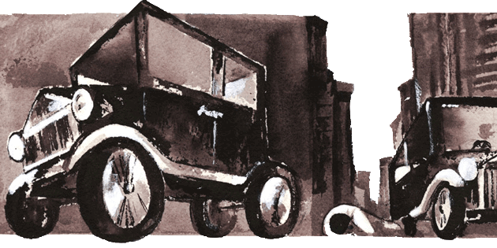
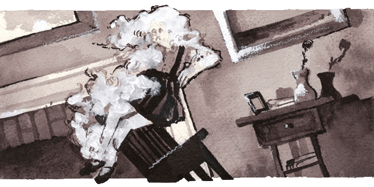
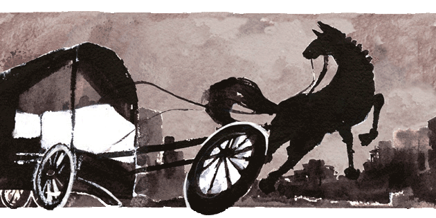
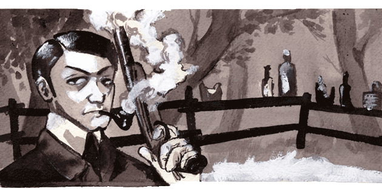
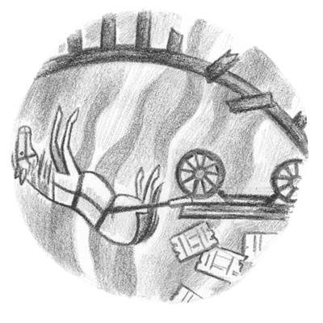
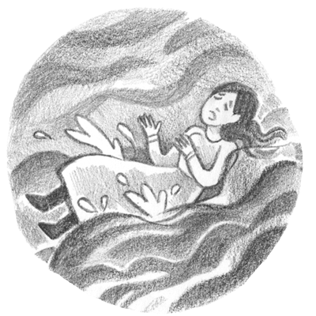

Crime Charts
The following data, compiled from the records of the Criminal Court, will show the amount of business disposed of in that tribunal for the year 1858:
January Term, 239 cases
May Term, 184 cases
September Term, 386 cases
Top News

Horrible Accident
A most horrible accident occurred on Monday evening last, at the residence of Dr. Dennis J. McKew, No. 154 Street — A little daughter of that gentleman, about six years of age, named Victoria Elizabeth McKew, took one of the camphene lamps during the absence of the family from the room, and entering the back room, mounted herself upon a chair and attempted to light the gas, and in so doing knocked off the top of the lamp. The fluid poured out over her entire person, and was instantly ignited, setting fire to her clothing, and burning her in a terrible manner before her screams were heard by the members of the family. Her mother hearing her cries for help ran to her assistance and finally succeeded in extinguishing the flames. She was attended by her distressed father and Dr. Miltenberger, who did everything in their power to alleviate her sufferings, but without avail, as she died on Wednesday morning in convulsions, after lingering in intense agony for thirty-six hours. Mrs. McKew in endeavoring to extinguish the flames was badly burned about the hands and arms.
. . . . .

Depressing Accident
An interesting little son of Mr. John Peach met with an accident yesterday, which terminated fatally. He attempted to jump on one of the cars while they were in motion in the yard of the Bolton Depot, on the Northern Central Railroad, when he missed his footing and fell to the ground, and before he could escape was run over by one of the trucks, fracturing his skull in a horrible manner. The services of Drs. Greentree and Maris were obtained, but nothing could be done to alleviate his sufferings and he expired in about two hours afterwards.
. . . . .

Run Away
About 12 o’clock yesterday a horse belonging to Mr. Samuel Valiant and attached to an Express wagon, took fright and ran down Baltimore Street, and when near North Street, came violently in contact with a horse and buggy, belonging to Mr. Scahffer, causing serious damage to the buggy, and breaking the axle tree and front portion of the Express wagon. One of the wheels of the Express wagon came off as Mr. Valant was driving past the Museum, causing the horse to rapidly increase his speed which resulted in the accident.
. . . . .

Accident
A young man named Louis Williams, who resides on West Fayette Street, met with a painful accident a day or two since while firing at a target in the woods adjoining the House of Refuge. He had loaded a pistol with which he had been firing, and fearing the charge was too heavy, he attempted to draw it out, but not suceeding he fired it, and in doing so the barrel burst, horribly lacerating his right hand.
Arrests
John Carney and Nicholas Pfifer, assault with intent to kill
John Carney and Nicholas Pfifer were arraigned before the Mayor yesterday morning on the charge of as assaulting with intent to kill John Mason.
John Mason, the party assailed, testified that he resides on the Falls Road near Mount Vernon factory, and was on his way home on Wednesday evening, and when near the city limits, he was met by three young men, who, with out any provocation whatever struck him with their fists and knocked him down, and then kicked and stamped him in the head and face. He succeeded in regaining his feet, and ran some distance down the road into his sister’s house, and succeeded in closing the door before the party who were pursuing him could reach the house; when they did arrive they demanded admittance, and upon being refused kicked the door with such force that two of the panels were broken in. After making serious threats they left, apparently satisfied with having defaced the premises. Witness thinks they were all drunk. He could recognise two of them, Cardney and Pfifer, but could not tell who the other man was.
Temperance Smith, a sister of Mason’s, testified to the party having broken the door, but did not see the assault; did not see them have any weapons. Officers Handy and Brooks were examined and testified that they found the party on the Falls road near the city limits, and upon their attempting to arrest them they were unable to detain but two or them, the other making good his escape. The Mayor imposed the usual fine of 66 cts. and costs for drunkeness, and committed them both to jail in default of $500 bail to answer at Court. It is alleged by persons residing in the neighborhood, that the same party made an attack upon a young man named Chafman and another man whose name is unknown, and beat them very severely.
Jacob Michael, assault with threat to kill
Jacob Michael was arrested by officer Caulk, charged | with assaulting and threatening to kill Elizabeth Merchel. He was committed to jail for court by Justice Boyd.
William Burgenham, riotous conduct
William Burgenham was arrested yesterday afternoon by officer Harney, charged with riotous conduct in the house of Mrs. Hayes, on Dallis street, near Canton Avenue. He was taken before Justice Griffin, and while in the magistrate’s office threatened to whip the officer who arrested him, swearing that he was a “Rough Skin,” and that he would do as he pleased. The Justice committed him to jail.
Geo. Joseph, battery
Geo. Joseph was arrested yesterday afternoon charged with beating his wife. He awaits an examination at the Eastern district police station.
Augustus Grier, cowhiding
August Grier was arrested yesterday afternoon by officer Graves, charged with cowhiding a boy named Anthony Adorcan. Justice Wheat held him for a further hearing.
Local News

Walked In The Falls
Yesterday about eleven o’clock a blind horse, which had been left standing in a dray on West Lombard Street near the bridge, during a short absence of the driver, walked into the falls at the side of the bridge, carrying the dray with him. The wall at this point is about ten feet high, and although falling that distance the animal was not seriously injured.
. . . . .
A Beggar Thief
On Wednesday evening at dark, a beggar called at the house of Mrs. Hayes, on Broadway, and asked the servant girl who came to the door for alms. The servant left the beggar in the hall while she went to inform her mistress of his request, and during her absence he stole a marble clock from off the mantle-piece and left.
. . . . .

Fell in the Falls
Yesterday morning a woman named Mrs. Brunner, while engaged in washing on the porch, at the rear of her house on Harrison Street, lost her balance and fell into the Falls. She was rescued by some neighbors.
. . . . .
Extension of Gas Pipes
Gas pipes have just been laid out Chew Street to Bond, and the citizens of what is known as Swampoodle will now be enabled to light their residences with gas.
. . . . .
Taxes
All taxes of this year which are not paid to-day will be placed in the hands of collectors, and bailiff’s fees will be added.
. . . . .
Charity
The Sons of Malta will distribute on New Year’s day five thousand loaves of bread — the distribution will take place at Carroll Hall.